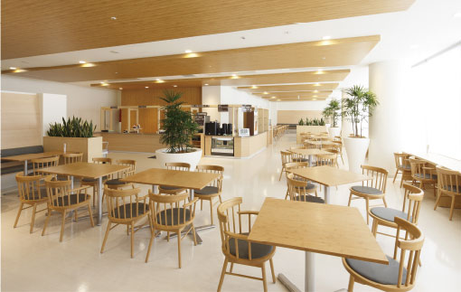
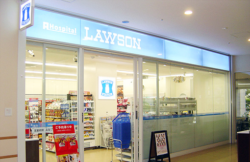
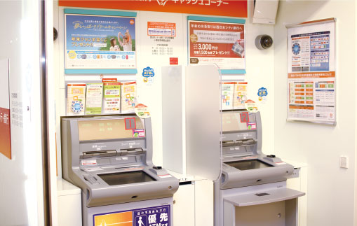
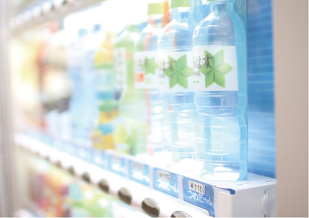
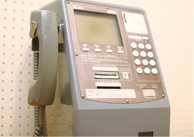
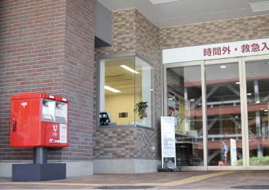
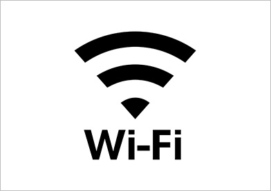

設備・店舗
Equipment and shop

食堂（はなさき食堂）
- ●2階
- ●平 日／
- 8:30〜15:30(ラストオーダーは15:00)
- ●土･日･祝日／
- 店休日

コンビニ
●1階 ●営業時間／7：00〜21：00
食品（弁当・惣菜・パンほか）・医療介護用品雑貨品・書籍類（新聞・雑誌・書籍）
その他/ATM、コピー、FAX、切手、ハガキ、ゆうパック、郵便ポスト、マルチメディア端末（チケット発券等）

ATM（西日本シティ銀行）
●2階 ●営業時間／8：00〜19：00
移動式美容室（TOM'S）
●来院日／週3～4日
都合により上記の日程に来れない場合もあります。散髪を希望される患者さんは病棟看護師にお気軽にご連絡ください。
【料金】カット 2,000円 カット＋顔そり 3,000円
※カラー、パーマは行っておりません。

自動販売機
●1階・2階・3階・各病棟

公衆電話
1階 救急待合
2階 正面回転扉横
3階 手術室前

郵便ポスト
●1階 時間外出入口横

コインロッカー
1階 回転扉前
2階 手術室家族待合
ICU家族待合
CCU家族待合

院内 Free wi-fi
●SSID：kokurakinen-wifi
●PASS：0935112000
●利用可能時間：7:00~22:00
●利用規約